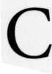

 ertain questions require the astrologer to consider the relative strength of the two significators. This chapter will review the essential and accidental dignities of the planets and other factors that affect planetary potency (strength, dignity).
Astrological Anthropomorphism and Peregrine Planets
Western astrology derives mainly from Babylonian, Egyptian, and Greek sources. The Egyptians named the heavenly bodies after their gods, and the Greeks of Egypt identified the Egyptian gods with their own. The ancients regarded the stars and planets as divinities. They considered their royalty and heroes to be gods whose souls ascended to heaven on their deaths to take their rightful place among the stars. Like earthly kings, the celestial star-gods governed particular realms. Our astrological ideas of essential dignity derive from this anthropomorphic theory.
We saw the importance of planetary dignities in the discussion of translation and collection of light. In the classical definition, a faster planet can only translate the light of a significator if it occupies one of the essential dignities of that significator when the chart is cast. In other words, the translating planet can gather the significator's light only if it starts out from a region of the zodiac in which that significator has dignity (strength).
Similarly, with the collection of light, the classical definition requires the slower (collecting) planet to be simultaneously in an essential dignity of each of the two significators. Suppose, for example, that Saturn wanted to collect the light of Mars and Jupiter. Saturn is slower than both Mars and Jupiter and should be able to collect their lights if the two faster planets will each aspect Saturn. To collect the light of Mars, Saturn would have to lie in a part of the zodiac where Mars has dignity. In addition, Saturn would have to be in one of Jupiter's essential dignities to collect his light. The anthropomorphic idea is that to collect something from you, I must go to a place where you are dignified.
The ancients used only the Sun, the Moon, and the five visible planets to govern particular regions of the zodiac. There were many ways to carve the zodiac depending on the calendar used by the culture. The Babylonians gave us the twelve zodiacal signs. They also used ten-degree divisions of the signs-the faces or decans-and five-day intervals, or the seventy-two "pictures," to measure smaller segments of time. The Egyptians and Chaldeans incorporated the seventy-two "sign" divisions into astrology as the "terms" of the planets. Different traditions have assigned different planetary rulers to the thirty-six decans and the seventy-two terms.
The modern rulers of the decans come from Hindu astrology, which grouped the signs according to the four elements (fire, earth, air, and water). Fire signs are Aries, Leo, and Sagittarius. Earth signs are Taurus, Virgo, and Capricorn. Air signs are Gemini, Libra, and Aquarius. Water signs are Cancer, Scorpio, and Pisces. Modern astrologers call these four groups, each containing the three signs of the same element, the four "triplicities," which are not to be confused with the system of triplicities used by Ptolemy.
In the Hindu system of faces (decanates), each sign rules its own first decan (ten-degree segment). The next sign of the element governs the second decan, and the third sign of the element rules the remaining decan. For example, Mercury and Virgo govern the first decan (face) of Virgo. Saturn and Capricorn, the next earth sign, rule the second decan of Virgo. Lastly, Venus and Taurus, the final earth sign, govern the last decan of Virgo.
By contrast, in the Ptolemaic system, the Sun rules the first decan of Virgo; Venus, the second; and Mercury, the third decan. This is the so-called Chaldean order of decanates that follows the Chaldean order of planets: Saturn, Jupiter, Mars, Sun, Venus, Mercury, Moon. The Chaldean order of decans begins with Mars ruling the first decan (face, decanate, ten-degree segment) of his own sign Aries, the Sun ruling the second decan of Aries, and Venus ruling the third decan of Aries. Next is Mercury ruling the first decan of Taurus, the Moon ruling the second decan of Taurus, and so on through the zodiac.
Following the Chaldeans, Ptolemy then assigned rulers to the faces in descending order of the speed of the planets; starting with Saturn, followed by Jupiter, Mars, Sun, Venus, Mercury, and the Moon. This pattern repeats through the thirty-six faces of the zodiac. You can see this clearly if you look at the faces in Table 6 of Ptolemy's Essential Dignities.
In addition to the Chaldean decans, the Ptolemaic system of triplicities may also take some getting used to. Like modern astrologers, Ptolemy assigned three signs to each of the four elements. The rulerships are a little different, however. The Sun rules fire by day, and Jupiter rules fire by night. Venus rules earth by day, and the Moon governs earth by night. Saturn rules air by day, and Mercury governs air by night. Mars rules water by both day and night.
Ptolemy synthesized the various methods of dividing the zodiac and assigning planetary rulers into his famous table of essential dignities. As a king could govern his country and its many territories, a planetary god could rule a sign and other regions of the zodiac. If a king visited a friendly nation, he might be "exalted" or treated royally. Although the king did not rule the place of his exaltation, he felt quite at home there. You can substitute "planet" for "king" in this discussion. A king or planet has "dignity" when it occupies a region that it rules or where it is exalted.
When a planet has no essential dignity whatsoever, we call it peregrine. The planets all make a peregrination (long journey) around the zodiac. The word peregrine derives from a Latin term meaning "beyond the borders of the field," where the field is the home territory. In English, peregrine means foreign, alien, or from abroad. A king was never peregrine if he traveled among territories he ruled or which exalted him. He felt at home and was not a foreigner in any of these places. If a king visited a land he did not rule and in which he had no exaltation, the king was a foreigner there, that is, he was peregrine, wandering aimlessly and not at home in any way.
Diplomats knew that if their king was visiting a foreign county, it was nice to have an exchange visit going on because they could then get their king out of trouble, should it arise. In astrology we call such an exchange visit a "mutual reception." We can compare a mutual reception to a hostage situation. Suppose, for example, that England and France were not friendly toward one another. If the king of England were visiting France while, at the same time, the king of France were visiting England, then both kings could feel safe. Each king is peregrine (alien) in the foreign country, but presumably nothing untoward will happen to either king while each country receives the ruler of the other. The mutual reception gives the kings exchange status and a way out of a jam.
Let me draw a modern analogy to further clarify the five essential dignities. Imagine each sign of the zodiac as a business housed in a commercial building owned by seven partners (planets). The principal member of the partnership is the primary owner of the business and its headquarters. The chief partner corresponds to the planet that rules the sign. Sometimes an important customer of the business visits the headquarters. That customer is treated royally and feels exalted when he steps inside the building. The principal customer does not own the business but he or she loves to visit there.
In addition, some of the partners use the commercial building by day and others use it by night. For example, in my son's elementary school the teachers use the school building during the day, and the cub scouts and civic organizations use it at night. The day and night users correspond to the day and night triplicities.
The business is further divided into three equal components, and a different partner looks after each of the three divisions. These are the three faces or decanates of the signs. Finally, the building itself consists of five separate rooms of slightly unequal size. Different partners take charge of each of the five rooms, one to a room. Each partner has a special place in the room which he or she governs. These are the five terms of the planets.
If a competitor of the business happens by, he or she is not treated very well and feels at a detriment. If an industrial spy gets caught in the building, he or she gets booted out and takes a fall.
MY DADDY Is STRONGER THAN YOUR DADDY
Little boys like to compare the strength of their fathers. Horary astrologers like to compare the strength of their significators. This comparison is made by the planet's location around the zodiac belt and by other factors affecting the significator. Planetary strength varies in proportion to the dignity of the planet. The most potent dignity is rulership of a sign of the zodiac. Next in power is exaltation, followed in order by triplicity, term, and face-the weakest form of dignity.
Lilly proposed a point system for rating dignities and debilities of the planets. Lilly gave five points to a planet in its own sign or in mutual reception with another planet by sign. A planet in its exaltation or in mutual reception with another planet by exaltation gets four points. Planets in their own triplicity get three points; in their own terms, two points; and in their own face, one point. I have reproduced Lilly's scoring system in Table 7 for planetary dignities and Table 8 for the Part of Fortune.
In the Lilly point system, if a planet does not have dignity by zodiac location, it is either neutral or debilitated. Planets lose five points for being peregrine, that is, wandering aimlessly without any dignity in the chart. Lilly thought that such undignified planets designated shiftless thieves when posited in angular houses, which gave them the energy to do nefarious deeds. Peregrine planets in the 2nd house could also act as thieves because they were wandering through the house of your valuable possessions.
Planets also lose five points if they occupy the sign opposite the one they rule, that is, when in their "detriment:" Planets only get a four-point penalty for traveling through the sign opposite their exaltation, that is, when in their "fall."
As you can see from Table 7, zodiac location is not the only way to gain or lose points. The potency of planets also depends on the aspects they make, their speed, their relation to the Sun, their house position, and many other obscure qualities noted in the annals of horary astrology. Just when you thought your daddy was about to go down to defeat, he cleverly pulls out a secret weapon known only to the horary astrologer. This part of horary is an obsessive- compulsive's dream, and to such horary arcana I devote the rest of this chapter.
ACCIDENTAL DIGNITY
In addition to dignity by zodiac location, planets can achieve dignity by their house placement. Placement in an angle-houses 1, 4, 7, or 10-gives power to a planet and turns peregrine planets into thieves. Modern astrologers feel the 10th is the strongest house, followed in order by the 1st, 7th, and 4th. In contrast, placement in a cadent house-3, 6, 9, or 12-weakens the significator.
The first-century astrologer Dorotheus used a different point system. To quote him, "The best of the places is the ascendant, then the midheaven, then what follows the midheaven which is the 11th from the ascendant, then the opposite to this 11th place from the ascendant, which is the 5th from the ascendant which is called the house of the child, then the opposite to the ascendant, which is the sign of marriage, then the cardine of the earth, then the 9th place from the ascendant." These are the seven preferred houses of the horo scope. To repeat Dorotheus, the seven good houses are, in order of decreasing potency: 1 10 11 5 7 4 9. Dorotheus also gives his list of the bad places. These evil locations are "the 3rd from the ascendant because it is said that it is the place of joy of the Moon, and the 2nd from the ascendant, then the 8th from the ascendant, which is the sign of death. Of these places which I told you, the first [ascendant] is the strongest. There remain equal to this [ascendant] two places which are the worst of the worst, and they are the 6th and the 12th." To summarize Dorotheus, the evil or bad houses in order of increasing maleficity are: 3, 2, 8, 6, 12.
Lilly took the list of Dorotheus and modified it as follows. Quoting Lilly, "The Angles are most powerful, the Succedants are next in virtue, the Cadents poor and of little efficacy: the Succedant houses follow the Angles, the Cadents come next [after] the Succedants; in force and virtue they stand so in order: 1, 10, 7, 4, 11, 5, 9, 3, 2, 8, 6, 12. The meaning whereof is this, that two Planets equally dignified, the one in the Ascendant, the other in the tenth house, you shall judge the Planet in the Ascendant somewhat of more power to effect what he is Significator of, than he that is in the tenth: do so in the rest as they stand in order, remembering that Planets in Angles do more forcibly show their effects"
Other accidental dignities include favorable aspects to the benefics or the Part of Fortune, freedom from combustion, swiftness of motion, increasing in light, highest elevation (nearest the M.C. in the 9th or 10th houses), closest to the horizon from the 1st or 2nd houses, oriental (eastern) in the chart, wideness of declination (more than seventeen degrees), directness of motion, and conjunction with benefic fixed stars or the Dragon's Head. The Moon or a planet is increasing in light when it is leaving a conjunction with the Sun. It decreases in light when it leaves an opposition with the Sun.
Mars, Jupiter and Saturn have dignity when oriental (east) of the Sun, that is, when they rise before the Sun. According to Lilly, "Saturn, Jupiter, and Mars are Oriental of the Sun from the time of their conjunction with him until they come to his Opposition." The Moon, Mercury and Venus are dignified when occidental (west) of the Sun, that is, when they set after the Sun. Lilly says, "To be Occidental is to be seen above the Horizon, or to set after the Sun is down: Mercury and Venus can make no Sextile, Trine, or Opposition to the Sun: their Orientality is when they are in fewer degrees of the Sign the Sun is in, or in the sign preceding; their Occidentality, when they are in more degrees of the sign the Sun is in, or next subsequent. ... The Moon is Oriental of the Sun from the time of her opposition to her conjunction." To judge whether a planet is oriental or occidental of the Sun, you can mentally rotate the chart so the Sun falls on the Ascendant. Any planets above the horizon are oriental (east of the Sun, rising before the Sun), and any below the horizon are occidental (west of the Sun, rising and setting after the Sun).
ALMUTENS
In addition to taking as significators the planet(s) that rule or occupy a house, traditional astrologers also considered the Almuten(s) of a house. The Almuten is the planet that has the most essential dignities at the degree of the sign on the cusp of the house. Because the triplicities have different rulers by day and by night, the Almutens will also vary by day and by night, that is, by whether the Sun is above or below the horizon. The same degree of a sign always has the same Almuten, depending on whether it is a day or a night chart.
Table 9 summarizes the Almutens of each degree of the zodiac for both day and night charts. Almutens are calculated by giving five points for sign rulership, four for exaltation, three for triplicity, two for term, and one for face. The planet with the most essential dignities by location is Almuten for that degree. For example, in a day chart Saturn is the Almuten of Libra because Saturn is exalted (four points) and, by day, rules the air triplicity (three points), for a total of seven points. Because planets can tie for total dignities, some degrees have more than one Almuten. In a night chart, or instance, Venus and Saturn are both Almuten for the area from six to eleven degrees of Libra because Venus rules Libra (five points) and also has terms (two points) from six to eleven degrees degrees of Libra, for a total of seven points in that area.
According to Lilly, the Almuten is "that planet who has most dignities in the sign ascending or descending upon the cusp of any house, whereon, or from whence, you require judgment." The Almuten of a house will sometimes vary depending on which house system one uses because the cusps of the various house systems will often be different. The Almuten of the whole chart (or figure) is the planet with the most essential dignities in the horoscope. Lilly used Almutens to find lost or stolen items and advised, "Look to the Lord of the 2nd and his Almuten (viz. he that has most dignities there) there are the goods."
COMBUST, CAZIMI, AND UNDER THE SUNBEAMS
I think the Arabs favored these rules because they tried to do astrology in the heat of the midday Sun. Bonatus said: "A corporal conjunction with the Sun is the greatest misfortune that can befall a planet." Dorotheus taught that the Sun's rays are so powerful they obscure or burn any planet that gets too close (combust). If the planet is not too close to the Sun but not yet far enough away, it simply gets a bad Sunburn (under the Sunbeams).
Combustion is the astrological version of the myth of Icarus who flew so near the Sun that the wax holding his wings together melted and he fell to his death. According to Lilly, "A Planet is said to be Combust of the Sun, when in the same Sign where the Sun is in, he is not distant from the Sun eight degrees and thirty minutes, either before or after the Sun. ... the Significator of the Querent Combust, shows him or her in great fear, and over powered by some great person."
Figure 6: Parameters of Sol's Influence
The problem with this rule is that the Sun is also the giver of life. To reconcile these conflicting traditions, astrologers developed the notion of "Cazimi" or being in the heart of the Sun. According to Lilly, "All Authors do hold a Planet in Cazimi to be fortified thereby." The Sun has a heart of gold and strengthens a planet so situated. If you believe that one, I'd like to sell you the Brooklyn Bridge.
What would horary astrology be without specific rules to tell you when a planet is combust, Cazimi, or under the beams? Combustion relates to the heliacal (related to the Sun) risings of the planets. The heliacal rising occurs when the planet that was hidden by the Sun's rays becomes visible, either east or west of the Sun. The heliacal setting is the planet's disappearance behind the Sun's rays as it approaches the Sun. The Moon rises or sets heliacally when it is seventeen degrees away from the Sun. This fact gave rise to the following parameters (see also Figure 6):
• Cazimi: Between zero and seventeen minutes from the Sun. "In the heart of the Sun." Corporally joined with the Sun and therefore greatly strengthened.
• Combust: Burned by the Sun's rays when between seventeen minutes and eight and a half degrees from the Sun and in the same sign as the Sun. Outside the body of the Sun but within the moiety of its traditional orb. Burned and weakened by the Sun. Like a third-degree burn. The Moon is especially weak here. The querent is afraid and overpowered by a great person.
• Under the Sunbeams: More than eight and a half and less than seventeen degrees from the Sun; that is, at a distance greater than the moiety but less than the orb of the Sun. Slightly weakened. A bad case of Sunburn.
THE NEW MOON
The New Moon, especially when applying, is a classically malefic influence in a horary chart. The New Moon occurs when the Moon conjoins the Sun, that is, goes from being combust to Cazimi. Why the Cazimi position of the Moon is so malefic when it greatly benefits the other planets is beyond me. I take this rule with a grain of salt because I have seen New Moon charts in which everything worked out fine. On the other hand, an approaching New Moon in an otherwise negative chart confirms a bad outcome.
THE FULL MOON
Bonatus advised that if the ruler of the most recent Full Moon before the question fell "in any of the angles of the thing enquired after ... it denotes that the matter will be accomplished." I assume Bonatus means that if the planet ruling the sign of the most recent Full Moon lies in the house of the quesited, or in the derivative 4th, 7th, or 10th of the quesited, the thing will be accomplished. I have not tested this rule, nor do I know of others who have. It would be a fruitful area of horary research.
TRINES OR SEXTILES BETWEEN THE LIGHTS
If the Moon applies to the Sun by sextile or trine, and no malefic aspect intervenes before the aspect becomes perfect, the astrologer has a strong confirmation of success if other aspects in the chart show a positive outcome.
BEING BESIEGED
In days of old when knights were bold and attacked each other's castles, the idea of besiegement was in vogue. If you could trap your enemy between two opposing hostile forces, he had no route of escape. Medieval astrologers saw Mars and Saturn as the two evil forces in the universe. Any planet caught between them in the zodiac was "besieged" and in no condition to help the querent. According to Lilly, "Besieging is, when any Planet is placed betwixt the bodies of the two Malevolent Planets Saturn and Mars." Whether the besieged planet is traveling direct or retrograde, its next conjunction would be to a malefic and it would fall into the hands of the enemy.
Modern astrologers include Uranus, Neptune, and Pluto among the malefics. In today's world there is evil at every turn. Some astrologers use major aspects other than the conjunction to determine besiegement. For example, if Venus signifies the querent and she lies between a square to Saturn on forward motion and an opposition to Mars on retrograde motion, she is besieged between the malefics. No matter which way she turns she gets zapped.
Bleeding heart, humanistic astrologer types have also added the idea of positive besiegement. It didn't seem fair that only Mars and Saturn could get into the act. Why couldn't we surround a significator with good? Thus, if the querent's ruler lies between Jupiter and Venus, the querent receives candy, sex, love, kisses, riches, favors and abundance no matter which way he or she turns. It's like being in heaven.
FAST OR SLOW IN MOTION
In the previous chapter, I listed the average daily geocentric motions of the planets. When a significator moves faster than average, it hastens the outcome of the question. When a significator moves slower than average, things proceed slowly. Dorotheus felt that slow planetary motion was of the nature of Saturn. Noting the speed of the significators can be helpful in assessing timing in a horary chart.
HAYz
This is one of the more obscure dignities that Lilly and some other astrologers pull out of their bag of horary tricks. According to Lilly, "HAYZ is when a Masculine and Diurnal Planet is in the day time above the earth, and in a Masculine Sign, and so when a Feminine, Nocturnal Planet in the night is in a Feminine Sign and under the earth: in questions it usually shows the content of the Question at the time of the Question, when his significator is so found." The feminine, nocturnal planets are the Moon and Venus. The masculine, diurnal planets are the Sun, Jupiter, and Saturn.
NODAL DEGREES
Ebertin describes the Moon's North Node as a principle of association or alliance, showing contact between people. The Moon's North Node (ascending node, Dragon's Head, or Caput Draconis) is a benefic in horary of the nature of Venus and Jupiter. Jones regarded the North Node as "a point of definite assistance," showing a "special cooperativeness from individuals or affairs ruled by the house which holds it." By contrast, the Moon's South Node (descending node, Dragon's Tail, or Cauda Draconis) is malefic like Mars and Saturn. Jones said the South Node is a "definite impediment in horary art, principally showing the promise or consequence of self-undoing, indiscretion and lack of common sense"
The Moon's Nodes are the points where the Moon's orbit crosses the ecliptic. It is on the Nodes that eclipses occur. From ancient times astrologers have associated eclipses with fatalities, tragedies, and catastrophes such as the deaths of kings. The exact degree at which a total eclipse occurs is so powerful that it resonates in each sign of the chart. In horary astrology, a planet in the same numerical degree as the Moon's nodes, regardless of sign, symbolizes a fateful event. It is often, though not necessarily, unfortunate and may even represent a catastrophe in the matter. For example, if the Moon's node were at 17° 28' Virgo, then a planet at seventeen degrees, any number of minutes, of any sign, would be in a Nodal degree.
FRUSTRATION, PROHIBITION, INTERFERENCE
Although these three terms have precise definitions, they are used loosely as synonyms in modern horary astrology. A teenage boy is about to kiss his first date good-night, standing on the front steps of her house. Just then the girl's doting mother opens the door to see what's happening. That's frustration.
There are many definitions of frustration in the horary literature. Lilly used the term frustration to refer specifically to the conjunction: "When a swift Planet would corporally join with a more ponderous, but before they can come to a Conjunction, the more weighty Planet is joined to another, and so the Conjunction of the first is frustrated, as Mercury is in 10° of Aries, Mars 12°, Jupiter in 13° of Aries; here Mercury strives to come to Conjunction with Mars, but Mars first gets to Conjunction with Jupiter; whereby Mercury is frustrated of the Conjunction of Mars: in Questions it signifies as much as our common Proverb, The Dogs quarrel, a third gets the Bone."
Related to the idea of frustration is that of prohibition. According to Lilly, "Prohibition is when two Planets that signify the effecting or bringing to conclusion of anything demanded, are applying to an Aspect; and before they can come to a true Aspect, another Planet interposes either his body or aspect, so that thereby the matter propounded is hindered and retarded." In prohibition, one significator is applying to a major aspect with another, symbolizing perfection in the matter, but a third planet in the chart aspects one of the two primary significators before they can aspect each other. The third planet causes an "abscission of light," that is, it cuts off the light of one of the significators and prohibits its functioning. The house governed by the third planet shows the nature of the prohibition.
Simmonite uses the terms frustration and prohibition synonymously (which frustrates the reader and prohibits understanding). He gives the following example of prohibition and abscission of light: "If Venus, Lady of the Ascendant were hastening to the trine of Mars, Lord of the Seventh, in a question of marriage, it might denote that the match would take place; but if Mercury [faster than either Venus or Mars] were to form an opposition to Mars before Venus reached her trine of that planet, it would be a frustration [prohibition] and would show that the hopes of the querent would be cut off, and if he were Lord of the Twelfth, it might denote that it would be done by a private enemy; if Lord of the 3rd, by means of relations, and so on."
Some authors use the term "interference" to refer to frustration and prohibition. Jones, for example, includes two situations under the heading of interference. The first occurs when the two significators are about to consummate an aspect but one of them "makes another aspect first instead."
Jones' other case involves a third planet completing an aspect to the slower significator before the aspect between the two significators can happen, and so interfering with the process in a different way. Either of these conditions "is a positive indication of interruption or distraction. ... It does not necessarily deny the desired outcome, but shows much trouble."
If the above explanations sound too abstract, think of the significators as two people, Andy and Bob, who are planning to meet to do something together. The applying aspect between them shows what they plan to accomplish. If Andy meets someone else on the way (an intervening aspect), Andy will experience a delay, distraction, or interference in his plans with Bob. If Andy plans to meet with Bob (conjunction) but Bob first meets with Carl before Andy reaches him, that's frustration. If Andy plans to help (trine) Bob but Carl opposes the plan (opposition) before Andy can help Bob, that's prohibition.
HINDRANCE AND IMPEDITION
Impedition refers to any condition that hinders or impedes the functioning of a significator. Such factors include aspects between significators and malefics, retrogradation, combustion, being cadent, being slow in motion, being in an intercepted sign, besiegement, and so on. Hindrance and impedition are general terms for things that obstruct the significators in a horary chart.
Lilly used "impedition" to refer to any factor that weakened or afflicted a significator. For example, he refers to Jupiter as impedited if conjunct with Mars, and to Saturn as impedited when retrograde. He discusses planets "which hinder or impedite the thing demanded in any question," and includes planets that are "ill-disposed" by being peregrine, retrograde, combust, cadent without aspecting the ruler or cusp of the house, or conjoined to a malefic without reception. Bonatus uses "impedition" synonymously with hindrance and affliction as a general term for the ill-disposition of a planet.
Chart 23: "What has already happened?" March 24, 1633, 2.26 P.m. GMT OW10/51 N30 Regiomontanus Houses
The following example illustrates Lilly's use of impedition. On March 24, 1633, at 2:26 P.m., a man asked Lilly what had happened to him in the recent past (CA, p. 135). See Chart 23.
Lilly reasoned as follows. With Leo rising, the Sun represents the querent and past events would be shown by its past aspects. During the month or so before the question the Sun (querent) had conjoined Mars, squared Saturn, and sextiled Jupiter. Sun conjunct 4th ruler Mars in the 8th suggested concerns about real estate (4th) and his wife's finances (8th). The Moon in the querent's 2nd house of substance applies to a square of Mars in the 8th, indicating a quarrel with his wife about money.
Saturn is the dispositor of the querent's Part of Fortune and represents his financial resources. Sun having recently squared 7th ruler Saturn shows that he and his wife "had lately been at great variance" and that "she had no mind that he should have any of her estate." His wife wanted to manage her own affairs and keep her estate for her own use "for Saturn is retrograde, a superior planet, and in a fiery sign, and the sign of the 7th is fixed; these show her a virago, or a gallant spirited woman, and not willing to be curbed, or else to submit."
Finally, because the Sun had recently been sextile to Jupiter in the 10th, Lilly said that some prominent attorney had tried to reconcile the difference between the querent and his wife. Reconciliation was possible because the Sun (querent) was applying to a trine with 7th ruler Saturn (the wife). The only problem appeared to be that "Mercury, who is in square aspect with Saturn, did impedite it."
What was the nature of Mercury's impedition of the proposed reconciliation between the querent and his wife? Lilly listed four possible sources of hindrance or impedition:
• Mercury might signify an attorney, lawyer, or document that obstructs the matter.
• As ruler of the 2nd, Mercury could signify disagreements about money.
• As ruler of the 11th, Mercury might represent a pretended friend who stirs up trouble.
• "As the 11th is the fifth from the 7th, a child of the querent's wife might be occasion of continuing the breach."
REFRANATION
If two significators are applying to an aspect but one of them turns retrograde before the aspect can become exact, the aspect is refrained from perfection. This condition is called "refranation" and symbolizes the failure of the event designated by the aspect to materialize. Lilly gave the example of Mars at 7° Aries approaching a conjunction with Saturn at 12° Aries. If Mars turns retrograde and "by that means refrains to come to a Conjunction of Saturn, who still moves forward in the Sign, nothing signified by the former Conjunction will ever be effected."
According to Jones, "When a planet is about to approach a desired aspect but, rather than completing it, turns retrograde and does not do so ... it reveals the complete collapse of some project, or the failure of a given effort, due primarily to a lack of adequate preparation." Turning retrograde is no small matter in horary, as you will see in the next two sections.
RETROGRADE MOTION
When one of the significators is retrograde, it is moving with apparent backward motion in relation to the earth. Backward motion symbolizes going back or returning to a previous condition. The querent or some key person may back out or change his or her mind. The person signified by the retrograde planet may be debilitated, or may be returning to something, or may be reuniting with someone. In McEvers' question about the job with Llewellyn, retrograde Mercury meant she had to re-negotiate the contract. The editing job also involved going back over written material submitted by other authors.
A retrograde significator is in a passive, receptive state. The person represented by the retrograde planet does well to imitate the motion of the planet. It is a good time to review, return, rewrite, re-edit, re-negotiate, reconcile, reunite, or do things that generally involve a turning to the past. Jacobson says retrogrades allow the person to "go back and try again." According to DeLong, if the significator of the quesited is "retrograde or debilitated, the objective, if gained, will likely fall short of expectations and should be reconsidered."
Retrograde Saturn in the 1st house often signifies some misfortune that denies a favorable outcome. A retrograde 7th house ruler may mean the astrologer will not be able to deliver his or her judgment to the querent. If the question is about a relationship, a retrograde 7th ruler may mean the other person is reluctant to make a commitment. In real estate questions, a retrograde 4th house ruler implies something about the property is unsatisfactory. If the 6th or 10th house ruler is retrograde, the querent may be returning to former employment. When the significator of a lost object or person is retrograde, the lost object or person will usually come back or return.
RETROGRADE MERCURY
Mercury is the natural ruler of thought, communication, and questions. Even when it is not a significator, a retrograde Mercury often affects the outcome of the inquiry. According to Llewellyn's 1990 Daily Planetary Guide, "Whenever Mercury goes retrograde, astrologers find that personal communications get fouled up or misunderstood more often." Mercury represents thinking, thus someone involved in the horary matter may change their mind or desires when Mercury is retrograde. Barbara Watters comments that "ideas which seem brilliant while Mercury is retrograde show serious flaws when it turns direct." In practice, retrograde Mercury is not so ominous as these quotes may make it sound. The basic meaning of a retrograde Mercury is a change or alteration in thought, wish, or communication. Chart 24 shows the effect of retrograde significators.
In May of 1989 a friend called me to ask if I would like to look at a new office suite. The lease on my current office would expire at the end of the year so moving to a new space was a possibility. On May 26, 1989, at 11:56 A.M. EST, I asked, "Should I move to the new office?" This is a question about a removal, which is ruled by the 7th house. I am in the 1st house, my current office is the 4th, and the place I would "remove" to is traditionally shown by the 7th.
Chart 24: Should I move to the new office?" May 26,1989,11:56 A.M. EST 72W55/41 N18 Koch Houses
The Ascendant is at 10° 34' Virgo, which is almost exactly conjunct my natal Sun. The chart is radical and fit to judge. My natal Sun on the Ascendant suggests I may be better off staying where I am. Mutable signs rule the angles so the situation is unstable. My significator, Mercury at 010 09' Gemini, is retrograde, combust, and void of course. Chances are I will either change my mind or have little power to affect the matter. Retrograde Mercury might also mean that some other key person will have a change of thinking.
Pisces is on the cusp of the 7th house of removals. Jupiter and Neptune rule the new office. Sagittarius on the 4th cusp makes Jupiter the primary ruler of my current office. Since Jupiter rules my present office, I will use the modern ruler Neptune as the primary significator of the place of removal. Mercury (me) makes no aspect to either Jupiter or Neptune, the rulers of the new office. My co-ruler, the Moon, also makes no aspect to the place of removal. No aspects, no action. I am not likely to move. There is also no aspect between me and my present office. What could that mean?
I need to compare the relative strengths of the significators to see which place is better for me. Jupiter rules my current office and is strong in the 10th house near the MC, an argument for me to stay where I am. Neptune is retrograde and besieged between the malefics Uranus and Saturn, a good reason not to go to the place of removal. Because the 7th ruler Neptune is retrograde, the new office may back out of the situation. How can an office do that?
Now for the outcome. My friend and I looked at the office suite and liked it. The location was good and the offices were larger and more attractive than those of my present space. The landlord, however, was unwilling to make some necessary changes such as painting and soundproofing. We tried negotiating with the landlord, but he changed his mind, took the offices off the market, and decided to use them in his own business. In the course of negotiating, I also became less interested in the new office and was planning to back out of the deal but the landlord beat me to it. Retrograde Mercury strikes again.